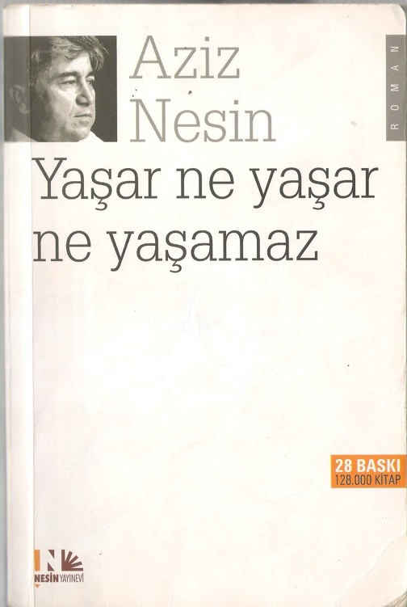
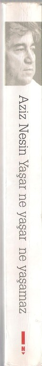
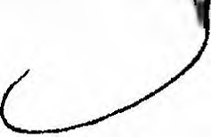
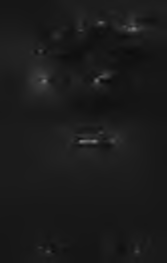

BU KİTABIN TELİF HAKKI NESİN VAKFENİNDİR
Aziz Nesin, yapıtlarının telif haklarını tümüyle
NESİN VAKFI’na bağışlamıştır.
NESİN VAKFEnın amacı, kimsesiz, yoksul ve
eğitime muhtaç çocukları, ilköğretimden başlatarak
bir yüksekokul bitirinceye ya da bir meslek edininceye dek
her türlü gereksinimlerini sağlayarak barındırmaktır.
NESİN VAKFI’nın senedi gereğince,
vakfın amacına uygun olması koşuluyla,
her dileyen her türlü yardım, katkı ve bağışta bulunabilir.
Her türlü bilgi ve broşür istekleri için posta adresi:
NESİN VAKFI, PK 5 Çatalca 34540 İstanbul
Nesin Vakfı Bağış Hesabı (TL)
Ziraat Bankası, Çatalca Şubesi, 130 - 952 22 32 - 5001
IBAN: T R İ0001000130095222325001
Posta çeki: 164 00 09
Diğer bağış hesapları ve bilgi için Nesin Vakfı’nın internet sitesi: ’
www.nesinvakfi.org • e-posta: nesinvakfi@nesinvakfi.org

Nesin Yayıncılık A.Ş.
İnönü Mahallesi, Çimen Sokak, No: 50/A, Elmadağ, Şişli/lstanbul
Tel: 0212 291 49 89 ■ Faks: 0212 234 17 77
nesin@nesinyayinevi.com • www.nesinyayinevi.com
Nesin Yayınevi’nde
Eylül 2005-F.ylül 2010 arasında 10 kez, toplam 50 bin adet basılmıştır.
Oııbirinci basım Şubat 2011 (5000 adet)
İlk basım 1977
1977-2005 arasında 17 kez, toplam 73 bin adet basıldığı bildirilmiştir.
Kapak Düzeni
İlhan Bilge
001 01 01 035 - 35
ISBN 978-975 9038-47-2
Sertifika No: 1 8231
lîaskı ve çili: Yazın Basın Yayın Matbaacılık Turizm Tic Ltd Şti. Çiftehavuzlar Cad. Prestij ݧ Merkezi Nıı: 27/806 Zeytinbıırnu/İstanbul Tel: 0212 565 01 22 Sertifika No: 121128